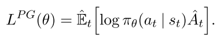
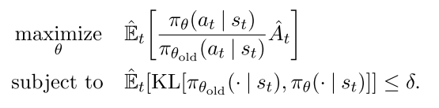
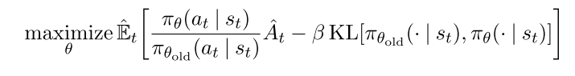
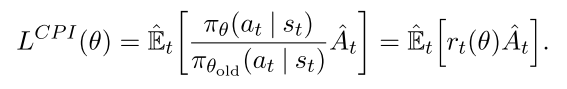
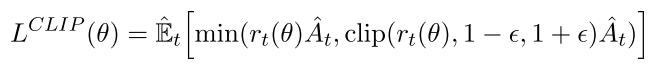
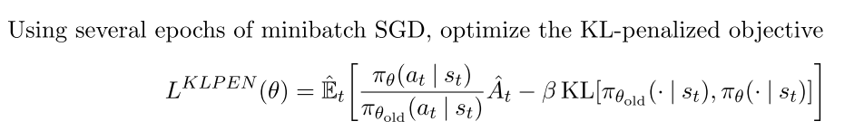
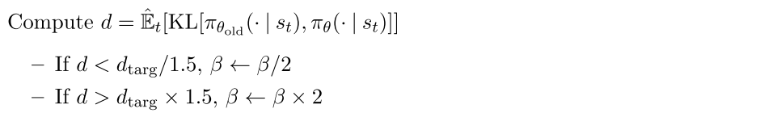
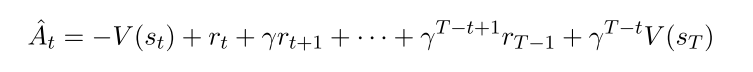
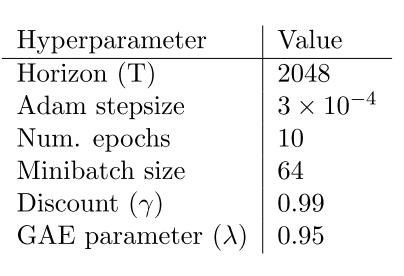
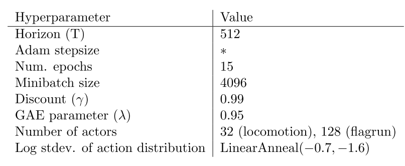

0.3 强化学习-PPO
paper:Proximal Policy Optimization Algorithms
核心:
- on-policy策略梯度算法, 使用重要性采样解决从行动策略进行采样的问题, 但是与off-policy算法不同, 这里的行动策略是老策略, 所以还是相当于on-policy算法.
- TRPO算法的改进版, 把添加进目标函数里, 一阶优化算法, 更容易实现, 样本复杂度也更高, (而TRPO作为最优化算法的约束项, 而且不使用策略梯度).
- 交替执行从策略中采样数据和代理("surrogate")目标函数优化过程, 优化时进行minibatch的多epochs更新. 而标准PG算法每抽样一次数据进行一次梯度更新.
- 该算法的样本复杂度(越复杂越好), 算法复杂度(越简单越好), 挂钟时间(越短越好) 具有很好的平衡.
- cliped的目标函数代表了策略得下界, 使用TD(n)计算优势函数.
1. 背景
1.1. PG
策略梯度算法一般是把策略梯度喂进随机梯度上升算法里, 常用梯度估计器为
 |
(1) |
|---|
其中为随机策略, 为优势函数. 计算该梯度, 一般要构造目标函数为
|  | (2) |
|---|
该函数不适合用同一个trajectory做多步优化, 往往效果很差.
1.2. Trust Region Methods
TRPO算法的优化过程改为一个到约束最优化过程, 其约束限制策略更新的幅度,
|  | (3, 4) |
|---|
其中, 是更新前的策略参数向量. 对目标进行线性逼近, 对约束进行二次逼近, 该问题可用共轭梯度算法有效地近似求解.
PPO算法把约束项作为惩罚项, 将上述问题变为无约束问题,
|  | (5) |
|---|
其中 需要自适应修改, 优势函数需要增加一些约束.
2. PPO
2.1 Clipped Surrogate Objective (PPO2)
令, 因此, TRPO最大化目标函数:
|  | (6) |
|---|
上标CPI表示保守策略迭代(conservative policy iteration [KL02]). 如果不加约束直接优化上述L会造成策略更新太大, 因此要考虑如何惩罚策略更新幅度, 让它不太远离1. 构造如下目标函数,
|  | (7) |
|---|
加clip的意思是
 |
|---|
| fig 1 |
 |
|---|
| fig |
2.2. Adaptive KL Penalty Coefficient (PPo1)
另一种解决思路是自适应惩罚因子, 该算法在每次策略更新中执行下面两步:
- 
- 
更新后的用于下一次策略更新.
2.3. 多步更新计算A
有很多方法计算方差减少的优势函数(variance-reduced advantage-function estimators).
广义优势函数如下:
 |
(11, 12) |
|---|
本文使用广义优势函数的截断版本, 令, 得,
|  | (10) |
|---|
2.4 PPO算法伪代码
通过构造或者的损失函数可以直接用自动微分进行多步SGD优化.
整体损失函数为
 |
(9) |
|---|
其中, 是系数, 表示an entropy bonus, 表示均方误差损失, , 一般
PPO算法使用固定长度trajectory片段, 每次迭代中, 每N个并行Actor收集T个时间步得数据, 然后使用这NT个数据构造代理目标损失函数, 并使用K个epochs的minibatch-SGD优化该损失函数, 通常Adam算法表现比较好.
 |
|---|
| fig 2 |
3. 实验
3.1 实验设置
测试的损失函数
对于KL散度版本, 可以使用固定或自适应的, 并使用target KL value . 作者测试了log空间中的版本,但是表现并没有变好.
- 在7个环境中测试算法, 每个训练100万步, 超参数使用了搜索, 其他的超参数是指定的.
- 策略表示: 使用2x64的FC层+tanh激活, 输出高斯分布均值, 其标准差可变;
- 策略函数和值函数不共享参数, 所以参数无关, 也不使用entropy bonus项;
- 每个算法都在7个环境中测试, 使用最后100 episodes的平均总回报作为比较,

|  |
|---|
| Table 3: PPO hyperparameters used for the Mujoco 1 million timestep benchmark |
|  |
| Table 4: PPO hyperparameters used for the Roboschool experiments. Adam stepsize was adjusted based on the target value of the KL divergence. |
 |
| Table 5: PPO hyperparameters used in Atari experiments. α is linearly annealed from 1 to 0 over the course of learning. |
讨论
目前RL提高点:
- 扩展性(大型模型以及并行化)
- 数据效率
- 鲁棒性(不用调超参数也可适用于多个任务).
目前主流算法缺点:
- DQN, 可解释性差, 不适应连续控制任务
- VPG, 数据效率低, 鲁棒性差
- TRPO, 算法太复杂, 不适用于存在噪声(dropout)或者参数共享(策略与值函数共享参数, 或任务与辅助任务共享参数)的结构.
PPO简单有效的方法.